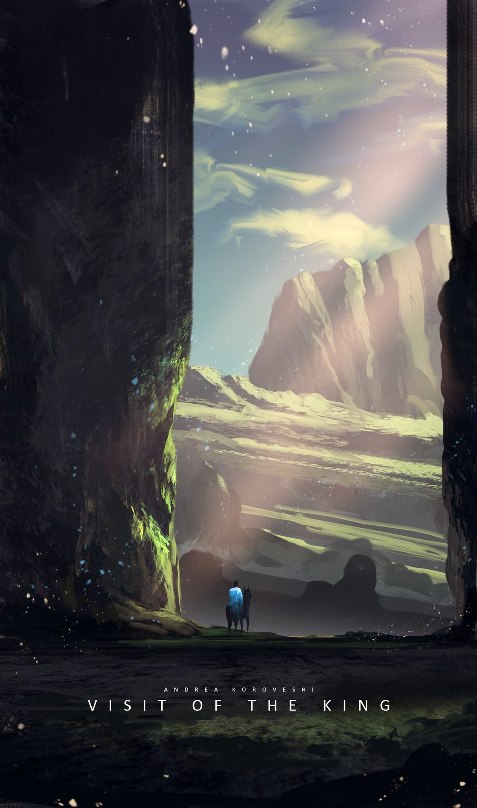

“长日尽处， 我站在你面前。 你将看到我的伤疤， 知道我曾受伤， 也曾痊愈。”

TMD：新世短歌（New Tanka）终于完成了它的历史使命，并于今日盖棺定论。或许还有很多歌未唱完，或许明天在明天就会到来。但无论如何，请满怀期待，The brave new world，What a wonderful world. 特别鸣谢TMD所有玩家和为之完善努力的人们。 特别鸣谢唱至嗓音沙哑的布谷鸟。 特别鸣谢名为太阳的星星。